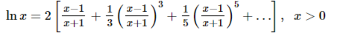

Мета роботи
Вивчити особливості циклічних обчислювальних процесів з розгалуженнями
Опанувати технологію рекурентних обчислень
Навчитися розробляти алгоритми та програми розвинення функцій у ряди
Вивчити особливості циклічних обчислювальних процесів з розгалуженнями
Опанувати технологію рекурентних обчислень
Навчитися розробляти алгоритми та програми розвинення функцій у ряди
Для виконання завдання 1 потрібно застосувати формулу для рекурентного відношення ln
n користувач вводить з клавіатури, як і точність розрахунку з максимальним та мінімальним значенням х
Далі в залежності від умови, я знаходжу функцію за 1 або за 2 формулою і подаю результат в таблиці. Для знаходження ln створюю окрему фукнцію, де накопичую суму та змінюю дроби та степні за допомогою цикла while та інкремента. Далі нам необхідно розрахувати значення функції і розрахувати похибку обчислень, знайшовши різницю між рекурентним обчисленням та обчисленням за допомогою звичайних функцій.
Для виконання 2 завдання, нам потрібно в залежності від парності або непарності розрахувати факторіал. Користувая сам вводить число n з клавіатури.
#include
#include
#include
using namespace std;
float accuracy;
double ln(float x) {
float sum = (2*x - 2 ) / (x + 2);
int i = 3;
float item = 2;
while (fabs(item) > accuracy) {
float j = 1;
item *= (j / i) * pow(((x - 1) / (x + 1)), i);
sum += item;
i+=2;
}
return sum;
}
void task1() {
float x, y, standart, error, xstart, xend, xs;
cout << "input xStart ";
cin >> xstart;
cout << "input xEnd ";
cin >> xend;
cout << "input xStep ";
cin >> xs;
cout << "input accuracy ";
cin >> accuracy;
cout << "=================================================" << endl;
cout << setw(5) << "x" << setw(10) << "y" << setw(20) << "standart" << setw(15) << "error" << endl;
cout << "=================================================" << endl;
for (x = xstart;x <= xend;x += xs) {
if (x <= 0 && x > -2 ) {
standart = log(2 * x) * log(x);
cout << setw(5) << x << setw(10) << "-nan(ind)" << setw(20) << standart << setw(15) << "ind" << endl;
}
else if (x > 0 && x <= 1) {
y = ln(x / 2) - 1;
standart = log(x / 2) - 1;
error = fabs(standart - y);
cout << setw(5) << x << setw(10) << y << setw(20) << standart << setw(15) << error << endl;
}
else {
cout << " " << "y undefied" << endl;
}
}
}
void task2() {
int i, n, res1, res2, res3;
cout << "Calculate n!*n!!*(2n+1)" << endl;
cout << "Input n: ";
cin >> n;
if (n % 2 == 0) {
res1 = 1;
for (i = 2;i <= n;i += 2) {
res1 *= i;
}
}
else {
res1 = 1;
for (i = 1;i <= n;i += 2) {
res1 *= i;
}
}
res2 = 1;
for (i = 1;i <= 2 * n + 1;i += 2) {
res2 *= i;
}
res3 = 1;
for (i = 1;i <= n;i++) {
res3 *= i;
}
cout << res3 * res1 * res2;
}
int main()
{
int chs;
setlocale(LC_ALL, "ukr");
cout << "Lab 4. Var17. Student Veronika Manoshyna IPZ-11" << endl;
while (true) {
cout << "Choose the task by press 1 or 2 on your keyboard: ";
cin >> chs;
switch (chs) {
case 1:
task1();
break;
case 2:
task2();
break;
}
cout << "\nContinue?\n 1 - yes\n 0 - no\nYour answer: ";
cin >> chs;
if (chs == 0)
{
break;
system("cls");
}
}
}
На цій лабораторній я роботі я реалізувала розрахунок функції за допомогою рекурентних співвідношень. Також розраховувала факторіал в залежності від парності.